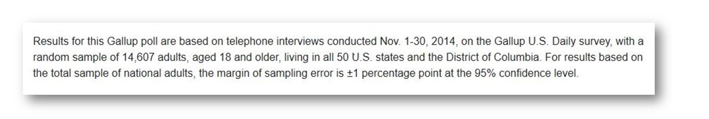

Shiny Sample Size Calculator for Proportions
wrightbr
Coursera Data Science 9 - Developing Data Products
Opinion polls and surveys are everywhere...
But many of these polls are unscientific...

How to tell the difference?
- A quick way to determine if a reported poll is scientifically valid is to look for a statment like this:

Now you can verify (reproduce!) claims about margins-of-error or even design your own poll with this new Shiny app!
Click here to go to the app: https://pinnipedia.shinyapps.io/SampleSize